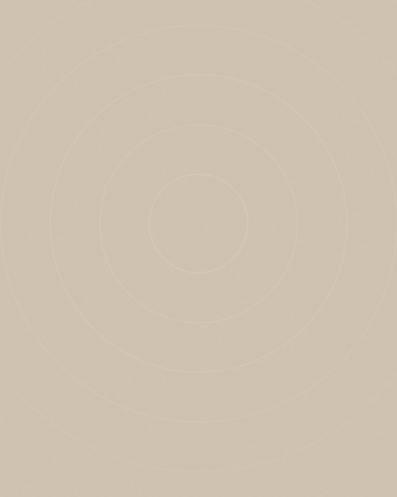

Psychosomatisch fysiotherapeut, met een fascinatie voor de verbinding tussen lichaam en geest — en de rustige kracht van een goede adem.

"Ik geloof in eenvoud. Een goede ademhaling is geen prestatie — het is een terugkeer."
Als psychosomatisch fysiotherapeut werk ik al jaren met mensen bij wie lichaam en geest uit balans zijn geraakt. Wat me daarbij steeds weer opvalt: de adem is vaak de sleutel — én de kortste weg terug naar rust.
Na mijn opleiding fysiotherapie specialiseerde ik me in de psychosomatiek en ademtherapie, omdat ik geloof dat klachten zelden op zichzelf staan. Spanning, stress en ingrijpende gebeurtenissen laten sporen na in het lichaam — en juist daar valt veel te herstellen.
AdemRuimte ontstond vanuit een overtuiging: herstel vraagt geen hardere aanpak, maar juist ruimte. Ruimte om te voelen, te vertragen en het eigen tempo te hervinden.
In mijn praktijk in Venlo begeleid ik volwassenen met uiteenlopende klachten — van spanningsklachten en burn-out tot hyperventilatie en chronische pijn. Altijd met dezelfde kern: samen kijken naar wat jouw ademhaling jou probeert te vertellen.
Buiten de praktijk laad ik zelf op met lange wandelingen buiten en muziek — twee dingen die me eraan herinneren hoe simpel ontspanning eigenlijk kan zijn.
Specialisatie in de wisselwerking tussen lichamelijke klachten en psychische spanning.
Aangesloten bij de beroepsvereniging voor psychosomatische fysiotherapie, werkend volgens de geldende kwaliteitsrichtlijnen.
Voortdurende bij- en nascholing om behandelingen af te stemmen op de laatste inzichten.
Een kort en vrijblijvend telefoongesprek is de eerste stap.
Vertel kort wat er speelt — ik bel of mail binnen één werkdag terug om een moment te plannen dat past.
Wat je deelt, blijft tussen ons. Altijd.